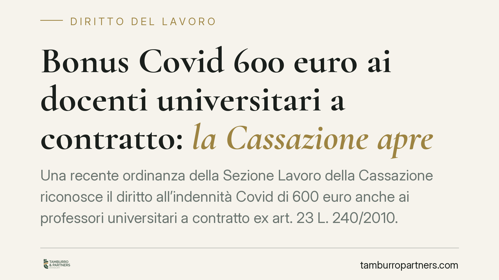

Bonus Covid 600 euro ai docenti universitari a contratto: la Cassazione apre
Una recente ordinanza della Sezione Lavoro della Cassazione riconosce il diritto all'indennità Covid di 600 euro anche ai professori universitari a contratto ex art. 23 L. 240/2010. Il principio: conta la sostanza del rapporto, non la sua denominazione. Chi presta attività come collaboratore coordinato e continuativo iscritto alla Gestione separata rientra tra i beneficiari dell'indennità emergenziale.

Il fatto
La Sezione Lavoro della Corte di Cassazione ha riconosciuto il diritto all'indennità emergenziale Covid di 600 euro a favore dei professori universitari a contratto, nominati ai sensi dell'art. 23 della Legge 240/2010. L'INPS aveva negato la prestazione sostenendo che la figura non rientrasse tra i destinatari previsti dalla normativa emergenziale.
> Nota redazionale. Numero e anno dell'ordinanza sono in corso di verifica. Riportiamo il principio di diritto; l'estremo preciso della pronuncia va confermato prima di ogni uso in sede difensiva.
La Corte ha ribaltato questa impostazione, qualificando il docente a contratto come lavoratore autonomo con collaborazione coordinata e continuativa, iscritto alla Gestione separata INPS. Da qui il diritto all'indennità.
Inquadramento normativo
L'indennità da 600 euro per il mese di marzo 2020 è stata introdotta dall'art. 27 del d.l. 18/2020 (c.d. Cura Italia). Attenzione alla lettura della norma: l'art. 27 riguarda i liberi professionisti titolari di partita IVA e i collaboratori coordinati e continuativi iscritti alla Gestione separata, purché non titolari di pensione e non iscritti ad altre forme previdenziali obbligatorie. È proprio quest'ultima categoria — i co.co.co. della Gestione separata — a rilevare per i docenti a contratto.
Il collaboratore coordinato e continuativo è, in sintesi, chi svolge una prestazione d'opera in forma autonoma ma dentro un rapporto stabile e coordinato con il committente. Non è un dipendente, ma neppure un professionista pienamente indipendente: per questo è iscritto alla Gestione separata INPS, il fondo previdenziale istituito per i parasubordinati.
La successiva disciplina emergenziale — tra cui il d.l. 34/2020 (c.d. Rilancio) — ha prorogato e rimodulato le indennità per i mesi successivi. La corrispondenza puntuale della singola norma al beneficio va però verificata caso per caso, perché i presupposti soggettivi e i periodi coperti sono cambiati nel tempo.
Il principio: sostanza oltre la denominazione
Il punto centrale della decisione è il criterio interpretativo. Non conta l'etichetta formale del rapporto — "professore a contratto", "incarico di insegnamento" — ma la sua natura sostanziale. Se la prestazione presenta i tratti della collaborazione coordinata e continuativa e il soggetto è iscritto alla Gestione separata, i presupposti dell'indennità sussistono.
Questo approccio è coerente con una giurisprudenza consolidata: la qualificazione del rapporto di lavoro si fonda sulle modalità concrete di svolgimento, non sul nomen iuris attribuito dalle parti o dall'ente.
Implicazioni pratiche
Per il docente universitario a contratto iscritto alla Gestione separata, la decisione apre alla possibilità di ottenere l'indennità negata o mai richiesta, a condizione che ricorrano i requisiti soggettivi previsti (assenza di altra copertura previdenziale obbligatoria, assenza di trattamento pensionistico).
Due avvertenze sui termini. Il diniego INPS va impugnato con azione giudiziaria nel rispetto delle regole sul contenzioso previdenziale: l'art. 47 del d.P.R. 639/1970 disciplina i termini per l'azione in materia di prestazioni previdenziali. Quanto al credito, occorre distinguere con attenzione tra prescrizione (termine entro cui il diritto si estingue se non esercitato) e decadenza (termine per compiere un atto, superato il quale l'azione non è più ammessa). La regola applicabile al caso concreto va individuata con precisione, perché incide direttamente sulla tempestività della richiesta: una valutazione errata può precludere il recupero.
Cosa fare in concreto
- Verificate la vostra posizione previdenziale. Controllate l'iscrizione alla Gestione separata INPS e l'assenza di altre coperture obbligatorie o trattamenti pensionistici nel periodo di riferimento.
- Recuperate la documentazione. Contratto ex art. 23 L. 240/2010, cedolini, eventuale domanda già presentata e relativo provvedimento di diniego INPS.
- Controllate i termini. Fatevi assistere per stabilire se il credito sia soggetto a prescrizione o decadenza e per evitare di perdere il diritto per decorso del tempo.
- Valutate l'impugnazione del diniego. Se l'INPS ha già respinto la domanda, esaminate i presupposti per l'azione giudiziaria nei termini di legge.
- Richiedete un parere individuale. Ogni posizione ha presupposti propri: una valutazione personalizzata è indispensabile prima di agire.
---
*Contributo informativo a cura di Tamburro & Partners — Avv. Giuseppe Tamburro. Non costituisce parere legale.*
Ogni storia di lavoro ha i suoi tempi.
Se gestisci HR e vuoi un confronto su contenzioso, ispezioni o licenziamenti, scrivi allo studio. Ti rispondiamo entro un giorno lavorativo.